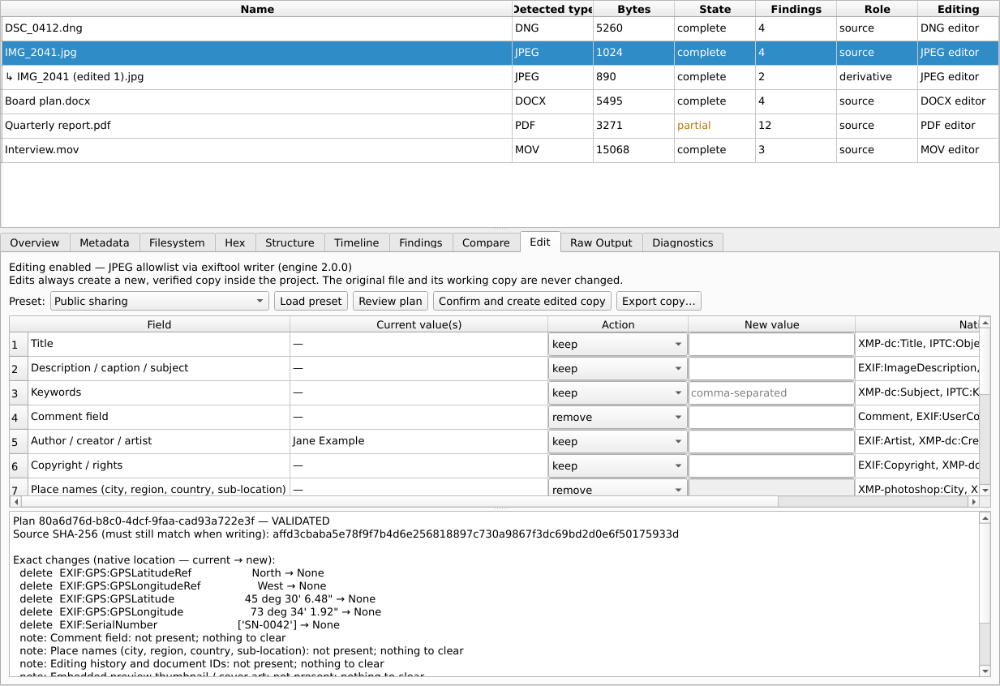
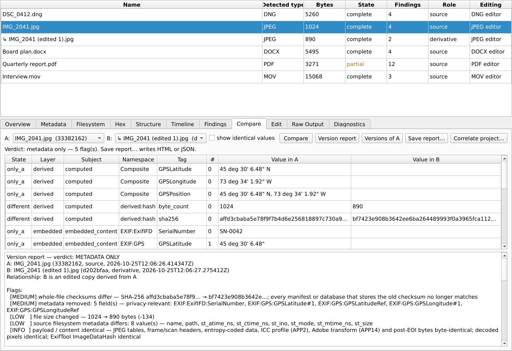
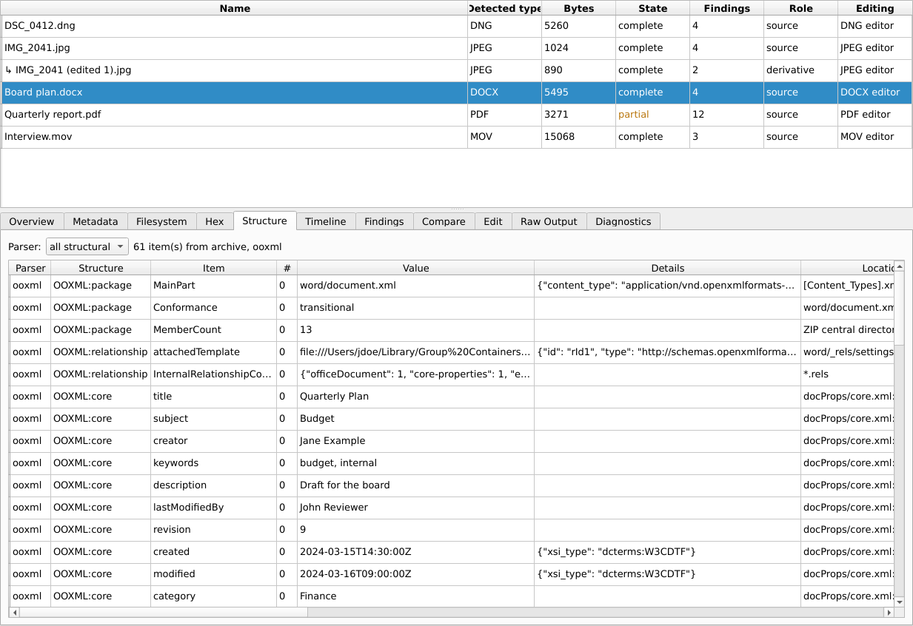
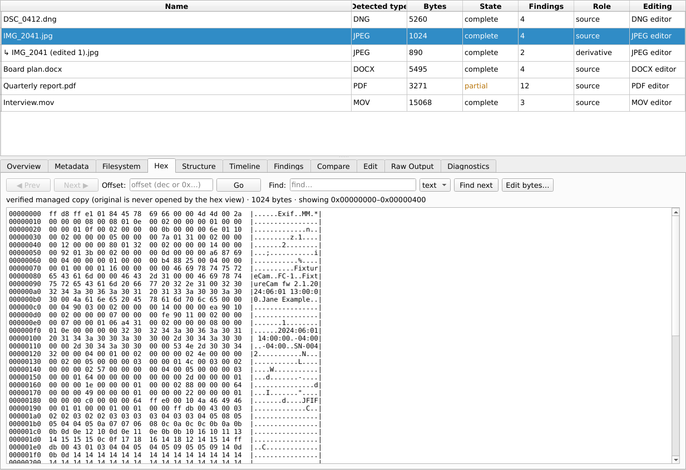

Metadata Workbench
Inspect, compare, verify and safely edit the hidden data inside your files — for cybersecurity, digital forensics, data governance and privacy clean-up. Free for macOS.
Inspecter, comparer, vérifier et éditer de façon sécuritaire les données cachées de vos fichiers — pour la cybersécurité, la forensique numérique, la gouvernance des données et le nettoyage avant partage. Gratuit pour macOS.
Version 0.5.0 · Mac with Apple silicon (M1 or later) · macOS 15 Sequoia or later · 63 MB download · release notes and SHA-256 checksum
Version 0.5.0 · Mac avec puce Apple (M1 ou plus récent) · macOS 15 Sequoia ou plus récent · téléchargement de 63 Mo · notes de version et somme de contrôle SHA-256

What it does
See everything
EXIF, XMP, IPTC, GPS, Office properties, comments and tracked changes, PDF revisions and scripts, audio/video tags, archive contents — each value with where it was found, alongside a hex view of the file.
Never touch the original
Every file is copied into your project and verified by its SHA-256. All viewing and editing work on that copy. Edits always create a new, separate file.
Edit with proof
Change or remove titles, authors, GPS (remove or round only), device serial numbers, comments, tracked changes, PDF scripts and more. Each edited copy is re-read and checked: the picture, sound, pages or document text are proven unchanged.
Verify integrity
Files are re-checked when opened: working copy, original, checksum files
(.sha256, .md5) and your checksum manifests. Exports can write new checksum files and update
manifests, including BagIt bags.
Compare versions
A version report flags every change between two versions: checksums, changed byte ranges, metadata added or removed, and whether the actual content changed — as HTML or JSON.
Analyse
Findings for review (time inconsistencies, conflicting values, privacy exposure, active content such as macros or PDF JavaScript), a timeline with explicit time-zone assumptions, and an audit log.
Formats
| Family | Inspect | Edit (new copy) |
|---|---|---|
| Images | JPEG, PNG, TIFF, HEIC, WebP and more | JPEG, PNG, TIFF |
| Camera RAW | All formats ExifTool reads | DNG (Apple ProRAW, DJI, Leica, Ricoh, Pentax, Samsung, Sigma); Canon CR3/CR2/CRW, Nikon NEF/NRW, Sony ARW, Fujifilm RAF, Panasonic RW2, OM System ORF, Pentax PEF, Leica RWL — after a one-time validation per camera model |
| Documents | Word, Excel, PowerPoint, PDF, archives | DOCX, XLSX, PPTX, PDF |
| Audio / video | MP4, MOV, M4A, MP3, FLAC, MKV, WAV and more | All of these (audio/video needs ffmpeg) |
Signed files and files with content credentials (C2PA) are read-only: editing them would break the signature.
Screenshots



Safe by design
The application works entirely offline and sends nothing anywhere. File parsers run in separate processes with no network access and can write only to their own temporary folders. It was tested with deliberately malformed and hostile files. Results are observations for review, not legal or expert conclusions.
Documentation
- Installation guide — including the one-time "Open Anyway" step on first launch
- User guide
- All releases
Licence
Free to use, as-is, without warranty. You may not redistribute or modify the application — please share this page instead. Third-party components keep their own licences. Full licence.
Ce que l'outil fait
Tout voir
EXIF, XMP, IPTC, GPS, propriétés Office, commentaires et modifications suivies, révisions et scripts PDF, balises audio/vidéo, contenu des archives — chaque valeur avec l'endroit où elle a été trouvée, accompagnée d'une vue hexadécimale du fichier.
Ne jamais toucher l'original
Chaque fichier est copié dans votre projet et vérifié par son SHA-256. La consultation et l'édition se font sur cette copie. Une modification crée toujours un nouveau fichier distinct.
Éditer avec preuve
Modifier ou retirer titres, auteurs, GPS (retrait ou arrondi seulement), numéros de série d'appareils, commentaires, modifications suivies, scripts PDF, etc. Chaque copie modifiée est relue et vérifiée : l'image, le son, les pages ou le texte du document sont démontrés inchangés.
Vérifier l'intégrité
Les fichiers sont revérifiés à l'ouverture : copie de travail, original,
fichiers de sommes de contrôle (.sha256, .md5) et vos manifestes. L'exportation peut écrire de
nouveaux fichiers de sommes de contrôle et mettre à jour les manifestes, y compris les sacs BagIt.
Comparer des versions
Un rapport de versions signale chaque différence entre deux versions : sommes de contrôle, plages d'octets modifiées, métadonnées ajoutées ou retirées et changement réel du contenu — en HTML ou JSON.
Analyser
Constats à examiner (incohérences temporelles, valeurs contradictoires, exposition de renseignements personnels, contenu actif comme les macros ou le JavaScript PDF), chronologie avec hypothèses de fuseau horaire explicites et journal d'audit.
Formats
| Famille | Inspection | Édition (nouvelle copie) |
|---|---|---|
| Images | JPEG, PNG, TIFF, HEIC, WebP et autres | JPEG, PNG, TIFF |
| RAW d'appareil photo | Tous les formats lus par ExifTool | DNG (Apple ProRAW, DJI, Leica, Ricoh, Pentax, Samsung, Sigma); Canon CR3/CR2/CRW, Nikon NEF/NRW, Sony ARW, Fujifilm RAF, Panasonic RW2, OM System ORF, Pentax PEF, Leica RWL — après une validation unique par modèle d'appareil |
| Documents | Word, Excel, PowerPoint, PDF, archives | DOCX, XLSX, PPTX, PDF |
| Audio / vidéo | MP4, MOV, M4A, MP3, FLAC, MKV, WAV et autres | Tous ceux-ci (l'audio et la vidéo nécessitent ffmpeg) |
Les fichiers signés et ceux qui portent des attestations de contenu (C2PA) sont en lecture seule : les modifier briserait la signature.
Captures d'écran
L'interface de l'application est en anglais.
Sécuritaire dès la conception
L'application fonctionne entièrement hors ligne et n'envoie rien nulle part. Les analyseurs de fichiers s'exécutent dans des processus distincts, sans accès réseau, et ne peuvent écrire que dans leurs propres dossiers temporaires. Elle a été testée avec des fichiers volontairement malformés et malveillants. Les résultats sont des observations à examiner, non des conclusions juridiques ou d'expert.
Documentation
- Guide d'installation — y compris l'étape unique « Ouvrir quand même » au premier lancement
- Guide d'utilisation
- Toutes les versions
Licence
Gratuit, tel quel, sans garantie. Il est interdit de redistribuer ou de modifier l'application — partagez plutôt cette page. Les composants tiers conservent leurs propres licences. Licence complète.